Đảo Khai Hoang
Hướng dẫn chơi chi tiết, có ví dụ


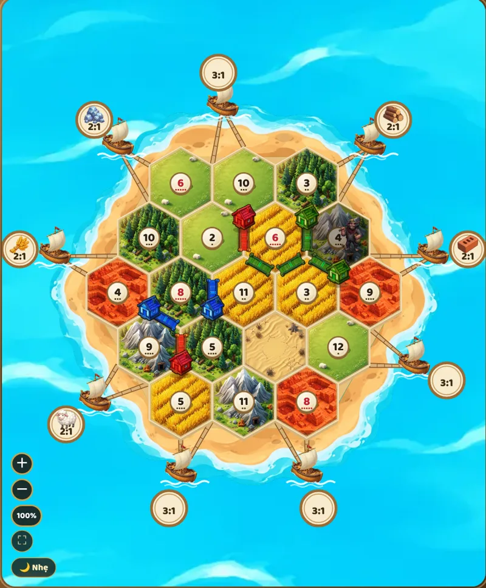
1Giới thiệu
Bạn và các đối thủ là những người đi khai hoang trên một hòn đảo hoang. Mỗi người xây đường, nhà và thành phố để thu tài nguyên, trao đổi với nhau và xây dựng để kiếm điểm. Ai đạt 10 điểm trước thì thắng.
Trò chơi kết hợp may rủi (đổ xúc xắc) với đàm phán và lập kế hoạch.
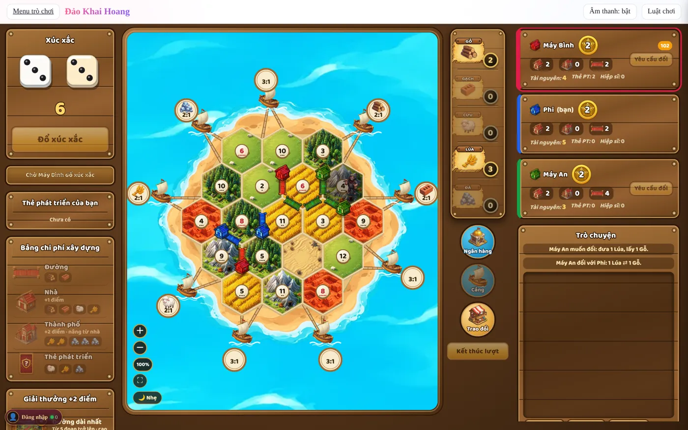
2Thành phần
| Thành phần | Số lượng và công dụng |
|---|---|
| Ô địa hình | 19 ô: 4 Rừng, 4 Đồng cỏ, 4 Ruộng lúa, 3 Mỏ gạch, 3 Núi đá, 1 Sa mạc |
| Cảng | 9 cảng quanh đảo: 4 cảng 3:1 và 5 cảng 2:1 cho từng loại |
| Số trên ô | 18 số: 2, 3, 3, 4, 4, 5, 5, 6, 6, 8, 8, 9, 9, 10, 10, 11, 11, 12 |
| Tài nguyên | 5 loại: Gỗ, Gạch, Cừu, Lúa, Đá |
| Thẻ phát triển | 25 thẻ: 14 Hiệp sĩ, 5 Điểm thưởng, 2 Làm đường, 2 Được mùa, 2 Độc quyền |
| Quân mỗi người | 5 nhà, 4 thành phố, 15 đoạn đường (mỗi người một màu) |
| Khác | 2 xúc xắc, kẻ cướp, giải Đường dài nhất, giải Quân đội mạnh nhất |
Ô địa hình và tài nguyên
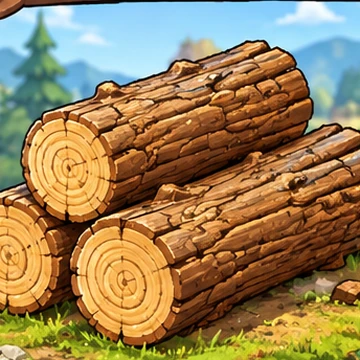
RừngGỗ · 4 ô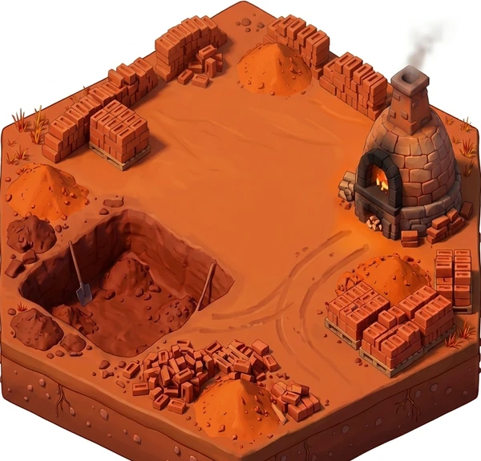
Mỏ gạchGạch · 3 ô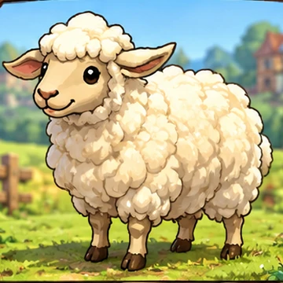
Đồng cỏCừu · 4 ô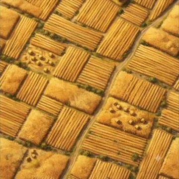
Ruộng lúaLúa · 4 ô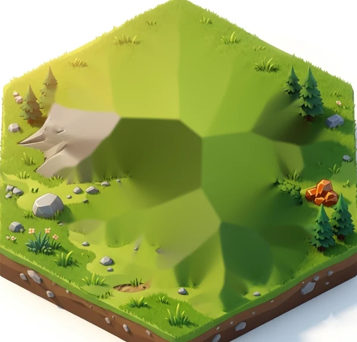
Núi đáĐá · 3 ô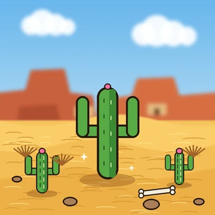
Sa mạcKhông cho gì · 1 ôQuân của bạn
 Đường15 đoạn
Đường15 đoạn Nhà5 nhà · 1 điểm
Nhà5 nhà · 1 điểm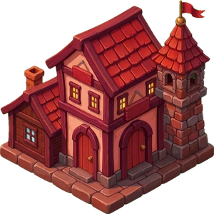
Thành phố4 thành phố · 2 điểm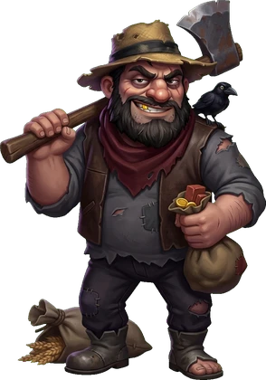
Kẻ cướpdùng chung3Chuẩn bị
Đặt quân khởi đầu
Mỗi người đặt 2 nhà và 2 đường, theo hai vòng:
- Vòng 1 (theo thứ tự): mỗi người đặt 1 nhà ở một giao điểm, rồi 1 đường kề nhà đó.
- Vòng 2 (ngược lại, người cuối đặt tiếp luôn): mỗi người đặt nhà thứ hai và 1 đường kề nhà đó.
- Nhà thứ hai cho ngay 1 tài nguyên với mỗi ô địa hình chạm nhà đó.
, 1 , 1 . Ô sa mạc thì không cho gì.Xác suất các con số
Số chấm nhỏ dưới mỗi số trên ô cho biết số đó hay ra cỡ nào: càng nhiều chấm càng hay ra.
4Lượt chơi
Mỗi lượt có 3 phần theo thứ tự. Bạn được dùng 1 thẻ phát triển vào bất kỳ lúc nào trong lượt, kể cả trước khi đổ xúc xắc.
① Đổ xúc xắc
Ai có nhà hoặc thành phố chạm ô mang số vừa ra đều nhận tài nguyên.
② Trao đổi


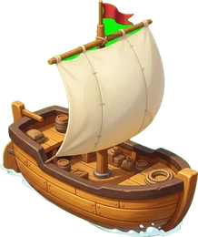
Với người chơi, ngân hàng hoặc cảng.
③ Xây dựng
Xây đường, nhà, thành phố hoặc mua thẻ phát triển.
Bước 1: đổ xúc xắc, nhận tài nguyên
Đổ 2 xúc xắc và cộng lại. Mọi người (không chỉ bạn) có nhà hoặc thành phố chạm ô mang số đó đều nhận tài nguyên của ô:
- Nhà: nhận 1 tài nguyên.
- Thành phố: nhận 2 tài nguyên.
- Ô đang có kẻ cướp đứng thì không cho gì.
, Nam nhận 2 . Nếu kẻ cướp đang đứng trên ô đó thì không ai nhận.!Khi đổ ra 7: kẻ cướp
- Ai có hơn 7 lá tài nguyên phải bỏ một nửa (làm tròn xuống). Có 9 lá thì bỏ 4.
- Người đổ xúc xắc dời kẻ cướp sang một ô khác bất kỳ.
- Người đó lấy ngẫu nhiên 1 lá tài nguyên của một người có nhà hoặc thành phố chạm ô mới. Ô đó không cho tài nguyên khi kẻ cướp còn đứng đó.
Đổ ra 7 thì không ai nhận tài nguyên lượt đó.
⇄Bước 2: trao đổi
| Kiểu đổi | Cách đổi |
|---|---|
| Với người chơi | Theo thỏa thuận, chỉ trong lượt của bạn và bạn phải là một bên. Được đổi nhiều loại cùng lúc, ví dụ 1 + 1 lấy 1 + 1 . |
| Ngân hàng | 4 lá cùng loại đổi 1 lá bất kỳ. Không cần ai đồng ý. |
| 3:1 Cảng chung | Có nhà hoặc thành phố ở cảng này: 3 lá cùng loại đổi 1 lá bất kỳ. |
| 2:1 Cảng riêng | Có nhà hoặc thành phố ở cảng của một loại: 2 lá loại đó đổi 1 lá bất kỳ. |
. Bạn đổi 4 cừu lấy 1 gạch ở ngân hàng. Nếu có cảng cừu 2:1 thì chỉ cần 2 cừu.⚒Bước 3: xây dựng hoặc mua thẻ
| Công trình | Chi phí | Điểm / tác dụng |
|---|---|---|
| Đường | 11 | 0 điểm, mở rộng đường |
| Nhà | 1111 | 1 điểm, nhận 1 lá khi trúng số |
| Thành phố | 23 | 2 điểm, nâng cấp từ nhà, nhận 2 lá khi trúng số |
 Thẻ phát triển Thẻ phát triển | 111 | Rút 1 thẻ phát triển |
Quy tắc đặt công trình
- Đường: đặt trên cạnh nối với đường, nhà hoặc thành phố của bạn. Mỗi cạnh chỉ có 1 đường.
- Nhà: đặt ở giao điểm nối với đường của bạn, và theo quy tắc khoảng cách.
- Thành phố: nâng cấp từ nhà của bạn. Nhà đó được trả lại để xây tiếp.
- Giới hạn: 5 nhà, 4 thành phố, 15 đường. Hết quân thì không xây thêm loại đó.
, 1 , 1 , 1 , 2 . Bạn xây 1 nhà và còn lại 1 gỗ, 2 đá để dùng lượt sau.5Thẻ phát triển
Rút ngẫu nhiên và giữ kín. Mỗi lượt dùng tối đa 1 thẻ (thẻ Điểm thưởng không tính), và không được dùng thẻ vừa mua trong cùng lượt.
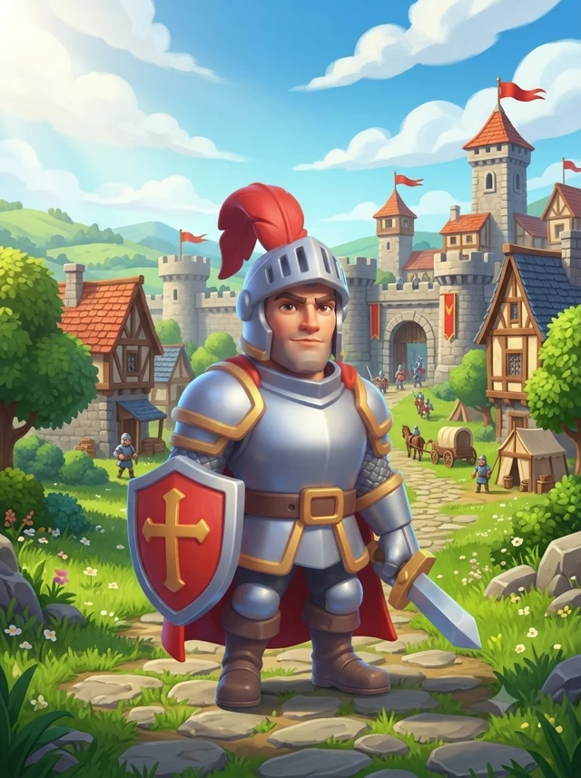
Dời kẻ cướp như khi đổ 7 và lấy 1 lá của người chạm ô mới. Tính vào Quân đội mạnh nhất.
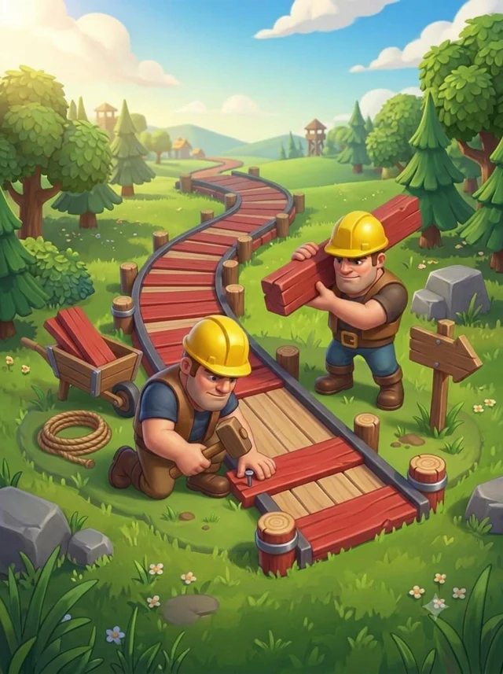
Xây ngay 2 đường miễn phí.
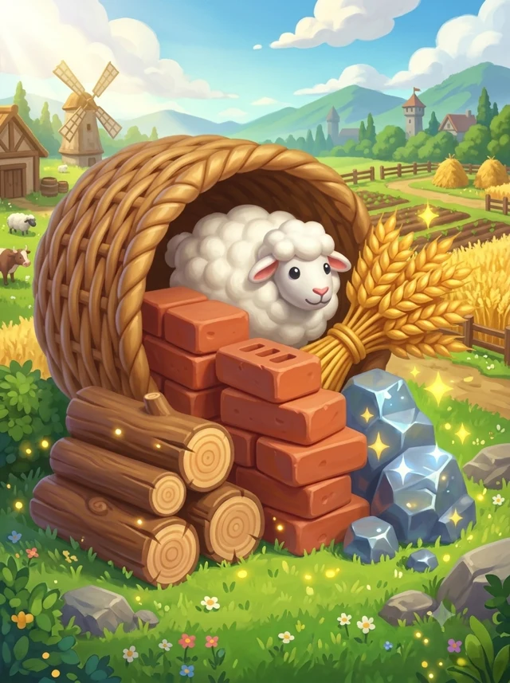
Lấy 2 lá tài nguyên bất kỳ từ ngân hàng.
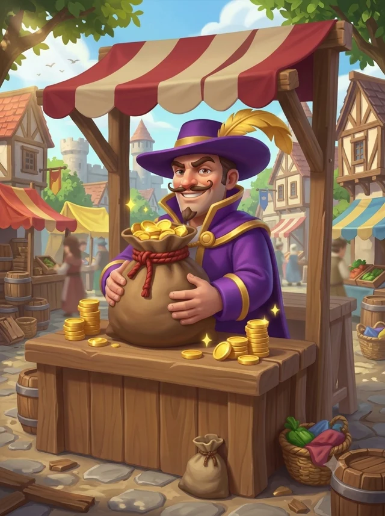
Gọi tên 1 loại tài nguyên, mọi người phải đưa bạn hết lá loại đó.
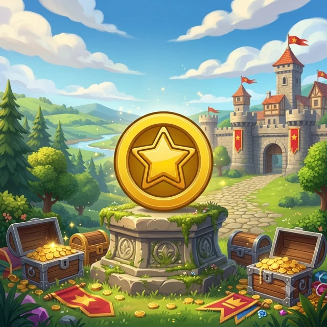
Mỗi thẻ 1 điểm. Giữ kín, tự cộng khi bạn đủ điểm thắng.
, nên bạn nhận 5 lúa.6Điểm và hai giải thưởng
| Nguồn điểm | Điểm | Ghi chú |
|---|---|---|
| Mỗi nhà | 1 | Tối đa 5 nhà |
| Mỗi thành phố | 2 | Tối đa 4 thành phố |
 Đường dài nhất Đường dài nhất | 2 | Từ 5 đoạn đường liền nhau trở lên, dài hơn tất cả |
 Quân đội mạnh nhất Quân đội mạnh nhất | 2 | Từ 3 Hiệp sĩ đã dùng trở lên, nhiều hơn tất cả |
| Thẻ Điểm thưởng | 1 | Mỗi thẻ |
Chuỗi đường liên tục, chỉ tính nhánh dài nhất, bị cắt nếu có nhà hoặc thành phố người khác chen giữa. Ai vượt thì lấy giải, bằng nhau thì người đang giữ vẫn giữ.
Ai dùng nhiều Hiệp sĩ hơn thì lấy giải, bằng nhau thì người đang giữ vẫn giữ.
7Kết thúc ván
Ngay khi bạn đạt 10 điểm trở lên trong lượt của mình, bạn thắng. Nếu đạt 10 điểm vào lượt người khác (ví dụ vừa giành Đường dài nhất), bạn phải chờ đến lượt mình.
8Ví dụ một vòng chơi
- AnAn có 1 nhà chạm Rừng 6. An đổ ra 6 và nhận 1 . Có sẵn 1 , An xây 1 đường về phía giao điểm trống. Lượt sau có thêm 1 cừu, 1 lúa thì An xây nhà ở đó.
- BìnhBình đổ ra 7. Ai có hơn 7 lá phải bỏ một nửa. Bình dời kẻ cướp sang Ruộng lúa 8 của An và lấy ngẫu nhiên 1 lá của An. Không ai nhận tài nguyên lượt này.
- Trao đổiBình thiếu , dư . Bình đề nghị "2 cừu đổi 1 đá", Cường đồng ý. Nếu không ai đồng ý, Bình đổi 4 cừu lấy 1 đá ở ngân hàng.
9Mẹo cho người mới
- Đặt nhà khởi đầu chạm nhiều loại, nhất là gỗ và gạch để mở đường nhanh.
- Ưu tiên số 6859. Tránh ô 212 vì rất hiếm ra.
- Chiếm chỗ đẹp sớm: quy tắc khoảng cách khiến chỗ tốt hết nhanh.
- Nâng thành phố ở nhà chạm số 6 hoặc 8 trước.
- Đừng ôm quá 7 lá, đổ ra 7 là mất một nửa. Hãy tiêu hoặc đổi bớt.
- Dùng kẻ cướp chặn ô chính của người đang dẫn điểm.
- Đổi cho người đang thua, tránh cho người sắp thắng tài nguyên.
10Lỗi hay gặp
- Quên rằng Đường dài nhất và Quân đội mạnh nhất có thể bị người khác giành mất.
- Xây nhà sát nhà khác, sai quy tắc khoảng cách.
- Dùng thẻ phát triển ngay lượt vừa mua.
- Đổi bài giữa hai người khác khi không phải lượt mình.
- Quên bỏ bài khi đổ ra 7 mà đang có hơn 7 lá.
Trong game, máy kiểm tra luật giúp bạn: nước đi sai sẽ không bấm được, nên cứ yên tâm chơi thử.